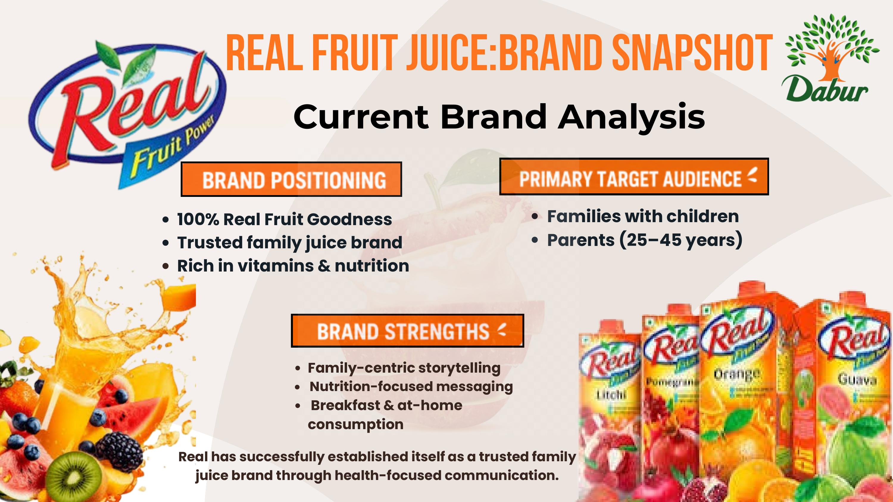
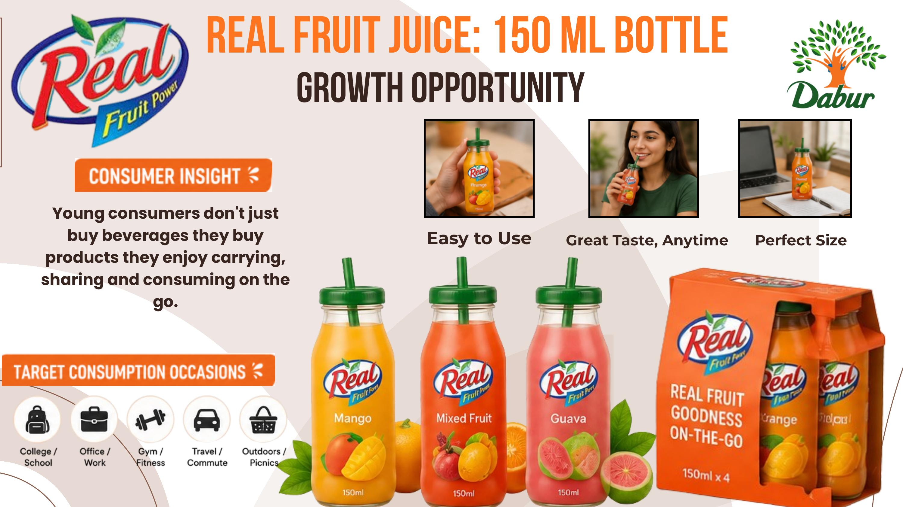

Case 01 · FMCG
Real Fruit Juice

The brand today
Real has built its name on 100% real fruit goodness — a trusted, health-focused family juice bought by parents (25–45) for kids at breakfast and at home. Strong equity, but it lives in one occasion.
The insight
Young consumers don't just buy beverages — they buy things they enjoy carrying, sharing, and drinking on the go. Real has no format built for that life: college, the gym, the commute, a picnic.
The idea
"Grab. Sip. Go."
A 150ml on-the-go bottle — easy to hold, great taste anytime, sized for a bag or a cupholder — positioning Real as the everyday healthy grab for young consumers, not just a family breakfast staple.
How I'd launch it
- Digital: Instagram Reels, YouTube Shorts, creator collaborations built around real "on the go" moments.
- Retail visibility: convenience stores, metro kiosks, office cafeterias — everywhere the occasion actually happens.
